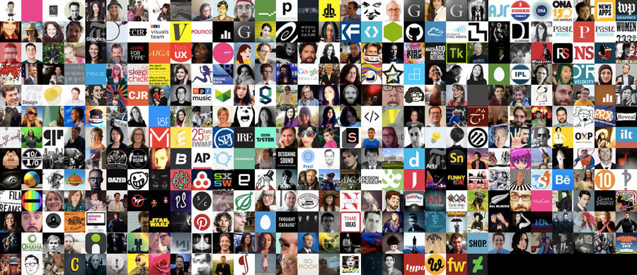

OpenNews brought all of us Knight-Mozilla fellows to Minneapolis a day early for a low-key, pre-SRCCON hack day. The theme of the event was "Quant Selfish," so the goal was to make something out of personal data related to whichever topic seemed interesting.
Kavya and I thought it might be fun to play with the Twitter API. The idea was to get a list of unrequited Twitter friendships – the accounts you follow that never returned the favor.
Drumroll, please...
Inspired by all those Twitterfolk who don't follow you back...now...without further ado...we present to you: YUNOFOLLOW and its undocumented GitHub repo!
...and the crowd goes wild!
 Here we have all 383 of my (that's @julia67's) unrequited friendships.
While this isn't anything special or ground-breaking in the least – I had never worked with the Twitter API before, so I figured I should document the steps that went into making this Twitter app.
Making a client-side app with Twitter data
Kavya and I only wanted to work on the front end for this, so we used oauth.io for OAuth integration and user management. The trickiest part was configuring the authentication piece; working with the Twitter API itself was pretty straight-forward.
Step 1: Create the Twitter Application
- Go to apps.twitter.com.
- Click Create New App.
- Fill in the application details.
- Put https://oauth.io/auth as the callback URL.
- Make note of the Consumer Key and Consumer Secret under the Keys and Access Tokens tab.
Step 2: Configure OAuth.io
- Go to oauth.io.
- Sign up or Sign in.
- Click Create an app. This will generate the App Keys (the Public Key and Private Key necessary to initialize the SDK). Find them under the General screen.
- Add the domain where you will host the app to the Domains & URLs whitelist box on the General screen.
- Click Integrated APIs in the sidebar.
- Click the Add API button.
- Choose Twitter from the available options.
- Add the Twitter Consumer Key and Secret Key from Step 1.4 to the client_id and client_secret fields.
- Click Try Auth. If all goes well, you'll receive a success message containing the code you'll need to initialize OAuth from your app.
OAuth.initialize('YOUR OAUTH.IO PUBLIC KEY GOES HERE');
OAuth.popup('twitter').done(function(result) {
console.log(result);
// do some stuff with result
});
Step 3: Write some code
- Include the oauth.io script on the page.
<script src="scripts/dist/oauth.js"></script> - Initialize OAuth.
OAuth.initialize('YOUR OAUTH.IO PUBLIC KEY GOES HERE'); - Authorize the app and save the result to a javascript object that will make HTTP calls to the Twitter API.
var provider = 'twitter';
OAuth.popup(provider)
.done(function(result) { // OAuth worked as expected
twitterObj= result;
twitterObj.me()
.done(function (response) { // Twitter user exists
console.log('You're on Twitter!');
console.log('Name: ', response.name);
console.log(response.raw);
})
.fail(function (err) { // Twitter user wasn't found
console.log(err);
});
})
.fail(function (err) { // OAuth didn't work
console.log(err);
});
$('button').click(function(){
var friendsURL = 'https://api.twitter.com/1.1/friends/ids.json';
twitterObj.get(friendsURL).done(function(data) {
friendsIDs = data.ids;
}).fail(function(err) {
console.log(err);
});
});
That's about it. We've identified a handful of issues with our code (which we wrote rather hastily) – but as this was just for fun, we're probably not going to fix anything. The goal was to identify our unrequited friendships – and identify them we did!
If you're interested in trying something like this, definitely check out the oauth.io docs and Twitter API docs. Also, Linda found a cool command line tool that does essentially the same thing – it's pretty spiffy if you're into that.